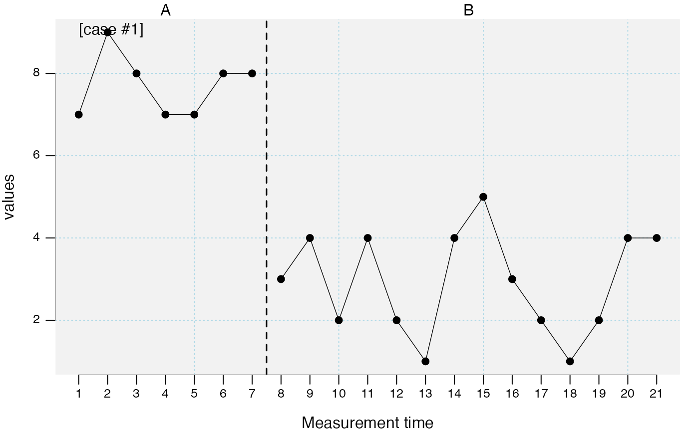
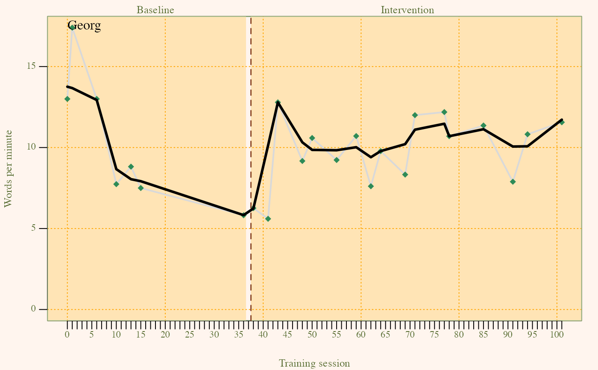

Plot single-case data
plot.scdf.RdThis function provides a plot of a single-case or multiple single-cases.
# S3 method for scdf plot(...) plotSC( data, dvar, pvar, mvar, ylim = NULL, xlim = NULL, xinc = 1, lines = NULL, marks = NULL, phase.names = NULL, xlab = NULL, ylab = NULL, main = "", case.names = NULL, style = "grid", ... )
Arguments
| ... | Further arguments passed to the plot command. |
|---|---|
| data | A single-case data frame. See |
| dvar | Character string with the name of the dependent variable. Defaults to the attributes in the scdf file. |
| pvar | Character string with the name of the phase variable. Defaults to the attributes in the scdf file. |
| mvar | Character string with the name of the measurement time variable. Defaults to the attributes in the scdf file. |
| ylim | Lower and upper limits of the y-axis (e.g., |
| xlim | Lower and upper limits of the x-axis (e.g., |
| xinc | An integer. Increment of the x-axis. 1 :each mt value will be printed, 2 : every other value, 3 : every third values etc. |
| lines | A character or list defining one or more lines or curves to be
plotted. The argument is either passed as a character string (e.g.,
|
| marks | A list of parameters defining markings of certain data points.
Use for example
|
| phase.names | By default phases are labeled based on the levels of the phase variable.
Use this argument to specify different labels: |
| xlab | The label of the x-axis. Default is |
| ylab | The labels of the y-axis. Default is |
| main | Main title of the plot. |
| case.names | Case names. If not provided, names are taken from the scdf.
Set |
| style | Either a character with the name of a pre-implemented style or a style object. See |
Value
Returns a plot of one or multiple single-cases.
See also
Examples
## Plot the three cases from Grosche (2011) and visualize the phase A trend plot(Grosche2011, style = "grid", lines = "trendA")## Request the local regression line for Georg from that data set and customize the plot plot(Grosche2011$Georg, style = "sienna", ylim = c(0,NA), xlab = "Training session", ylab = "Words per minute", phase.names = c("Baseline", "Intervention"), lines = list("loreg", lty = "solid", col = "black", lwd = 3))## Plot a random MBD over three cases and mark interesting MTs dat <- rSC(design = design_rSC(3)) plot(dat, marks = list(positions = list(c(2,4,5),c(1,2,3),c(7,8,9)), col = "blue", cex = 1.4), style = c("grid", "annotate", "tiny"))